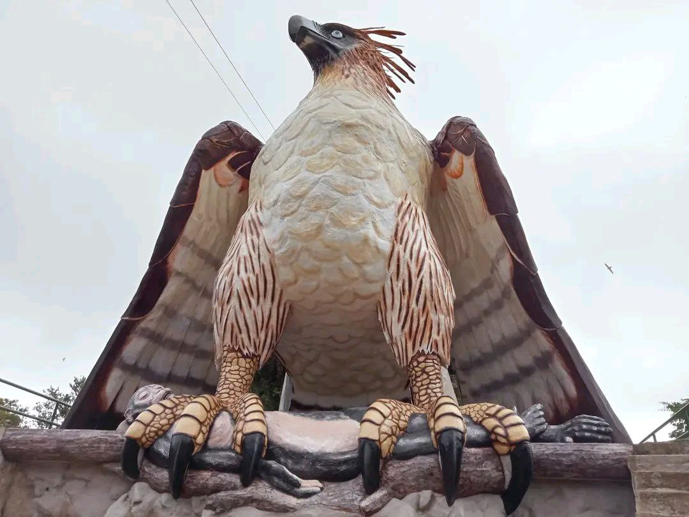

One of the few waterfalls in the mountain located at OGO-OG, KADACLAN, BARLIGs
Barlig's Eagle Statue isn't just a panorama; it's a cultural and conservation symbol.
This lake is a myth believed to be a crater of some volcano as hot springs are scattered widely in the village.
The brook feeding Mapesak Falls teems with endemic aquatic species including giant ell located at Brgy Lias Kanluran, Barlig, Mt Province
Mount Amuyao, also called Mount Finaroy, is situated in the Mountain Province in Luzon’s Cordillera Administrative Region. Mount Amuyao has an elevation of 2,702 meters above sea level (MASL). It's one of the highest mountains in Luzon.